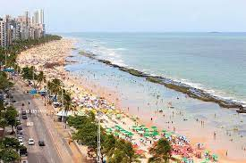
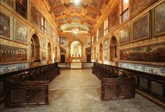

Praia de Boa Viagem
A Praia de Boa Viagem é a praia urbana mais famosa da cidade do Recife, capital do estado brasileiro de Pernambuco. Com aproximadamente oito quilômetros (8 km) de extensão, está situada no bairro homônimo, Zona Sul da capital pernambucana, delimitada pela Praia do Pina ao norte e pela Praia de Piedade ao sul. A maior parte da Praia de Boa Viagem é protegida por uma barreira de recifes naturais, que deu nome à cidade. No século XVII, a povoação da Boa Viagem servia de ponto de descanso dos viajantes que por ali transitavam vindos do sul da Capitania de Pernambuco. A praia tornou-se depois um local de veraneio para os recifenses, até a chegada dos edifícios nas décadas de 1940 e 1950. Tais edifícios beira-mar criam sombras sobre a praia, o que levanta críticas. A orla dispõe de parque, jardim e espaços de prática desportiva. Na maré baixa formam-se várias piscinas naturais rasas, com águas mornas e transparentes, ao longo da praia. Também durante a maré baixa é possível andar sobre os recifes, que são relativamente planos e largos (mas escorregadios). Quando a maré sobe, os arrecifes ficam completamente cobertos pela água. Na Praia de Boa Viagem há quiosques padronizados, ciclovia, pista de cooper, chuveiros, quadras de vôlei e tênis e equipamentos para musculação.
Capela Dourada
A Capela Dourada, que recebe o nome formalmente de Capela dos Noviços da Ordem Terceira de São Francisco de Assis, é uma um dos principais pontos turísticos do Recife e uma das igrejas mais impressionantes, localizada no Convento de Santo Antônio. A capela foi erguida no século 18 e tem uma decoração barroca exuberante, com muito ouro, talha e azulejos portugueses. A riqueza artística e histórica chama a atenção. Faz parte do projeto Recife Sagrado, junto com outros templos: Madre de Deus, Nossa Senhora do Rosário dos Homens Pretos do Recife, Basílica de Nossa Senhora da Penha, Santa Tereza D’Ávila da Ordem Terceira do Carmo e a Sinagoga Kahal-Zur Israel.